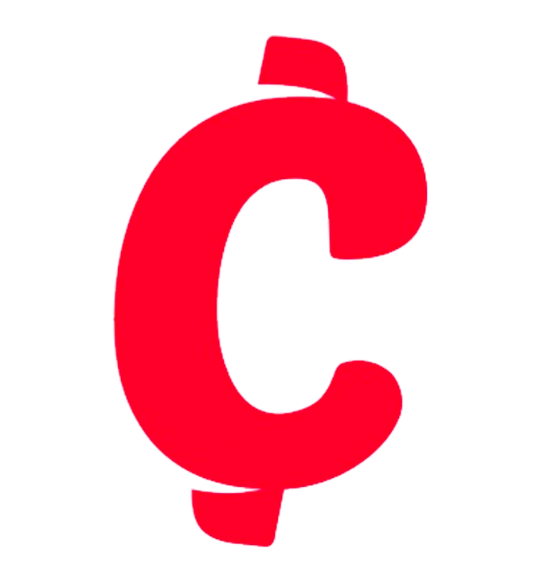

Estrategia y liderazgo de QA
Diseño la metodología y el proceso de calidad, formo equipos de QA y acompaño a los PMs a escribir historias de usuario con criterios de aceptación. La calidad deja de ser una fase y pasa a ser parte del proyecto.
QA Lead & Automation
Lidero equipos de QA, diseño la estrategia de calidad y automatizo pruebas con Playwright e IA.


Llevo la calidad a todo el ciclo del proyecto: desde que llega hasta que se entrega.
Diseño la metodología y el proceso de calidad, formo equipos de QA y acompaño a los PMs a escribir historias de usuario con criterios de aceptación. La calidad deja de ser una fase y pasa a ser parte del proyecto.
Suites de regresión y smoke E2E y de API en TypeScript, con Page Objects.
-40%
en tiempos de prueba frente al proceso manual
Construí una plataforma en React y Node.js que usa Gemini para generar escenarios de prueba en Playwright. Uso IA para diseñar, generar y analizar pruebas más rápido.
Pruebas con k6 y JMeter sobre AWS (EKS) para validar la estabilidad ante picos de demanda.
Mesa de servicio automatizada en Jira, sin costo de licencias, con dashboards de calidad en Looker Studio para la gerencia.
De la ejecución manual en e-commerce a liderar la calidad de una casa de software.
Descargar CVImaginamos Casa de desarrollo de software
Innovo Group
Chiper E-commerce B2B para tiendas de barrio
Abyte Soluciones

Aseguré la calidad de los módulos que mueven las ventas de la plataforma: promociones, precios y contenido. Cada cambio se validaba contra su programación y su impacto en la compra.
UNIMINUTO, en curso (3er semestre)
Español nativo, inglés básico (A2)
“Quedé impresionado con su habilidad para llevar a cabo pruebas exhaustivas y su incansable compromiso con la calidad de los entregables.”
“Su enfoque en la excelencia ha llevado a un notable aumento en la calidad de nuestro producto. Es la persona que querrías tener siempre al lado.”
“Viviana es pura excelencia. Responsable, resiliente y resolutiva. Muy buena tester y con gran capacidad de análisis.”
“Tiene la impresionante capacidad de entender proyectos nuevos de alta complejidad y contagia al equipo de energía para lograr los objetivos.”
Estoy abierta a roles de QA Lead, QA Automation y Senior QA.
Escríbeme